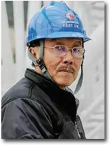

Break the difficulty
Yuan Longping is a pioneer and leader in the field of hybrid rice research. He devoted himself to the study of hybrid
rice.
At the same time, Yuan Longping put forward and implemented the project of "three yields and four abundances" by
utilizing the technical achievements of super hybrid rice.
His remarkable achievements not only contribute to solving the problem of the Chinese people's temperature saturation
and ensuring national food security, but also set a monument to world peace and social progress.
nitial heart
In 1968, Tu youyo served as the group leader of the project.
After two years of research, the project team focused on the research of Artemisia annua.
In 1971, artemisinin and artemisinin were successfully extracted to inhibit malaria by 100%.
In the future, Tu hopes to use artemisinin in more places and bring good news to more people through research.
Report the country
Qian Xuesen put forward a number of concepts in the field of rocket and aerospace, presided over the completion
of the "establishment of jet and rocket technology" planning.
Tsien Hsueshen has become one of the most outstanding representatives in the field of aviation and aerospace in
1940s.
Qian Xuesen is also one of the older generation of scientists who have made immeasurable contributions to the growth
of New China. He is the most influential and outstanding representative of the people's scientists in the history
of New China.
Stick to creation
In 1995, the outstanding performance, so that the docking mechanism is being set up product development team to
open the door to him.
Without any technology and experience to draw lessons from, it took Wang Shuqun nine years to build China's first
engineering docking mechanism.
On November 3, 2011, Tiangong-1 and Shenzhou-8 spacecraft made China the third country in the world to master space
rendezvous and docking technology.

Keep in mind the mission
Nan Rendong was born in 1945 and has a legendary life.
After graduating from Tsinghua University, he worked in a northeastern power plant for ten years.
After the reform and opening up, he served as visiting professor and scholar in famous foreign universities. He
also participated in the Ten National Congress radio telescope program.
In 23 years, he has gone from his prime to his twilight years, turning a simple idea into a national weapon and
accomplishing a unique project in the world for China.。